DPROMA
Sitio evaluado
19/36Evidencia completa
Doce criterios, ocho sitios y la evidencia detrás de cada nota. Competidores de carga EV en México y referentes de tecnología, automotriz y energía renovable.
Lectura en una frase y las cifras de la evaluación.
La web de DPROMA está bien hecha. Le faltan pruebas, casos reales, imagen propia y producto visible.
Cómo se mide. Diez criterios los puntúa una persona evaluadora a partir de lo que se ve en la captura y la navegación; dos (SEO técnico y accesibilidad/rendimiento básicos) se calculan con comprobaciones automáticas reproducibles. Solo se puntúa lo observado: lo que no se pudo ver queda «sin evaluar». No es una auditoría WCAG ni un estudio con usuarios. Sin puntuar: VEMO, Tesla. Capturado el 15 oct 2026.
Cada terreno reacciona al puntero y resalta su columna en la matriz. Las empresas sin evidencia suficiente aparecen atenuadas.
Sitio evaluado
Red de carga · competidor directo
Red ultrarrápida · competidor directo
Red de carga · competidor directo
El sitio no se pudo abrir desde el entorno de análisis (error SSL del servidor). Sin captura ni puntuación.
Superchargers · competidor directo
tesla.com devuelve «Access Denied» (403) al navegador automatizado. Solo se evalúa la ficha pública de su app; el resto queda pendiente de capturas aportadas por el cliente.
Referente tecnología EV B2B
Referente automotriz
Referente energía renovable
Sin conexión con la librería de gráficos. La tabla muestra los mismos datos.
| Sitio | Puntaje |
|---|---|
| Enphase | 30 |
| ChargePoint | 26 |
| BYD México | 22 |
| FAZT | 21 |
| Evergo | 20 |
| DPROMA | 19 |
| Mediana de los otros 5 | 22 |
Sin puntaje global: VEMO: sitio inaccesible; Tesla: evidencia parcial.
Cada criterio vale de 0 a 3. Cuanto más intenso el color, mejor la nota. El número siempre acompaña al color.
Toca una celda para ver qué se observó y dónde.
| Criterio | Sitio evaluado | Competidores en México | Referentes | |||||
|---|---|---|---|---|---|---|---|---|
| DPROMA | Evergo | FAZT | VEMO | Tesla | ChargePoint | BYD | Enphase | |
| Segmentación por audienciavisto | ||||||||
| Páginas por industriavisto | ||||||||
| CTAs y conversiónvisto | ||||||||
| Herramienta interactivavisto | ||||||||
| Prueba socialvisto | ||||||||
| Casos de éxitovisto | ||||||||
| App y producto digitalvisto | ||||||||
| Recursos, blog y FAQvisto | ||||||||
| Transparencia de preciosvisto | ||||||||
| Fotografía y video realesvisto | ||||||||
| SEO técnico básicomedido | ||||||||
| Accesibilidad y rendimiento básicosmedido | ||||||||
| Total | 19 / 36 | 20 / 36 | 21 / 36 | 0 de 12 | 1 de 12 | 26 / 36 | 22 / 36 | 30 / 36 |
Selecciona una celda de la matriz para ver qué se observó, en qué sitio y con qué criterio.
Distancia entre DPROMA y el mejor sitio en cada criterio, contra los otros 5 sitios puntuados.
| Criterio | DPROMA | Mediana | Mejor | Brecha |
|---|---|---|---|---|
| Fotografía y video reales | 0 | 3 | 3 | 3 |
| App y producto digital | 1 | 2 | 3 | 2 |
| Transparencia de precios | 1 | 2 | 3 | 2 |
| Prueba social | 1 | 1 | 3 | 2 |
| Segmentación por audiencia | 2 | 3 | 3 | 1 |
| CTAs y conversión | 2 | 3 | 3 | 1 |
| Herramienta interactiva | 2 | 2 | 3 | 1 |
| Recursos, blog y FAQ | 2 | 2 | 3 | 1 |
| Accesibilidad y rendimiento básicos | 2 | 2 | 3 | 1 |
| Páginas por industria | 2 | 1 | 3 | 1 |
| Casos de éxito | 1 | 0 | 2 | 1 |
| SEO técnico básico | 3 | 2 | 3 | 0 |
| Brecha acumulada | 16 |
En escritorio, los números marcan los patrones observados. Capturas de sitios de terceros, para análisis interno.
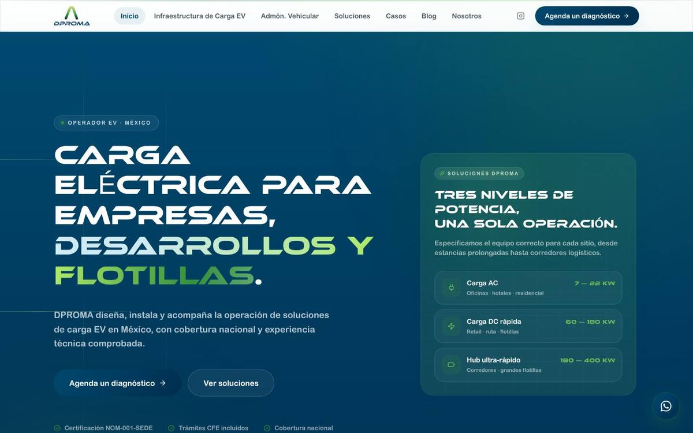
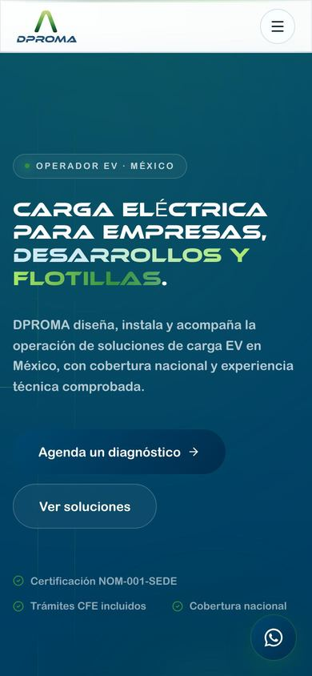
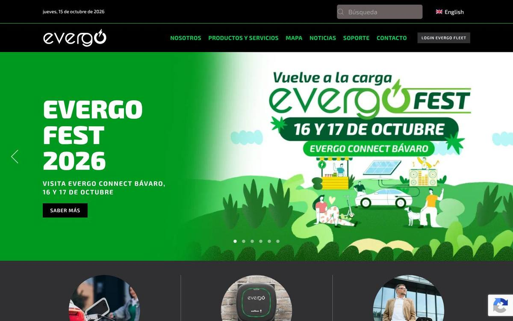
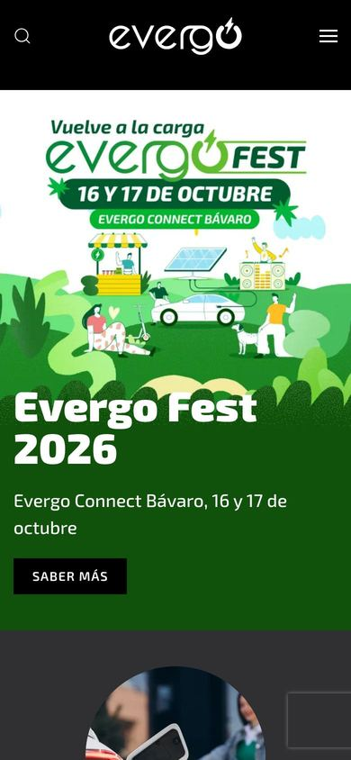
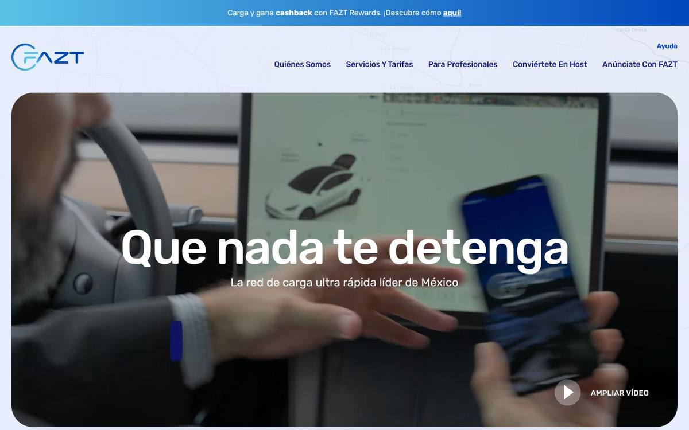
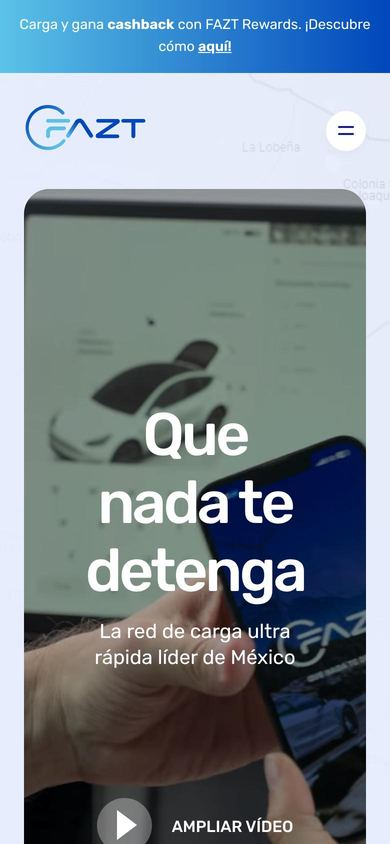
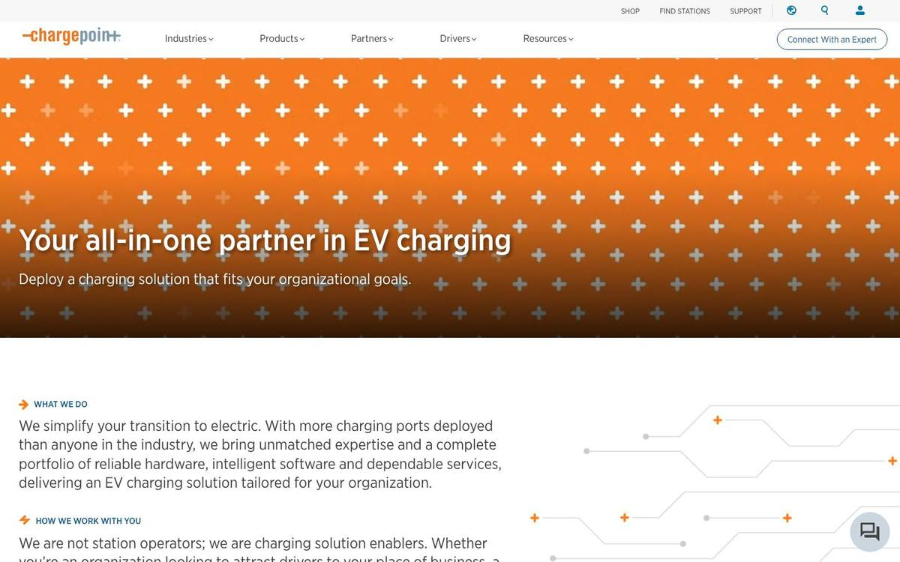
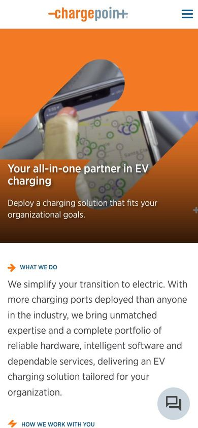
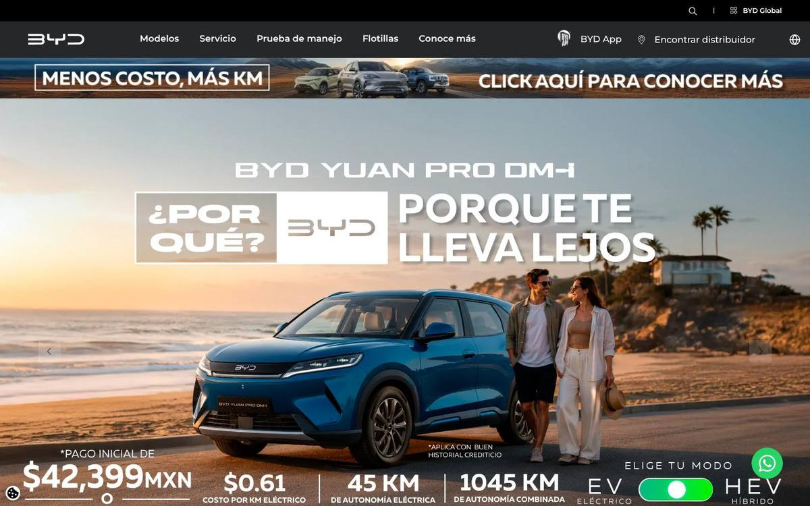
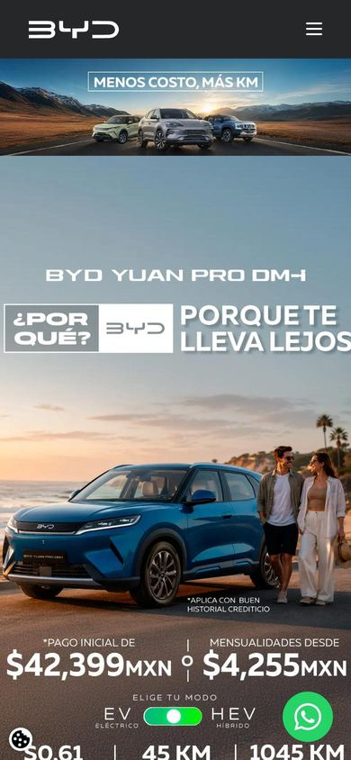
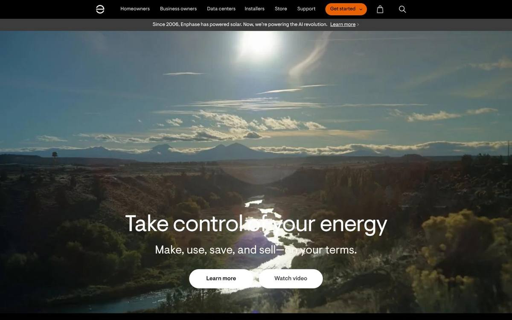
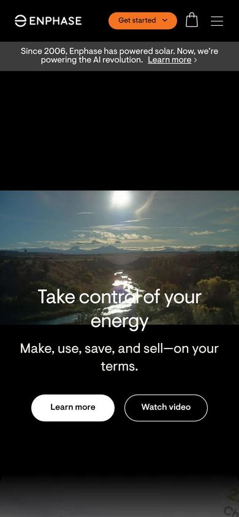
VEMO: sin captura
El sitio no se pudo abrir desde el entorno de análisis (error SSL del servidor). Sin captura ni puntuación.
Tesla: sin captura
tesla.com devuelve «Access Denied» (403) al navegador automatizado. Solo se evalúa la ficha pública de su app; el resto queda pendiente de capturas aportadas por el cliente.
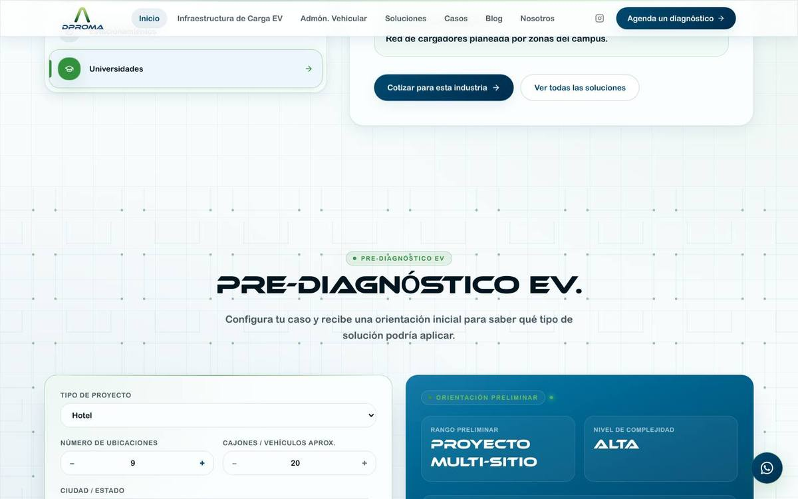
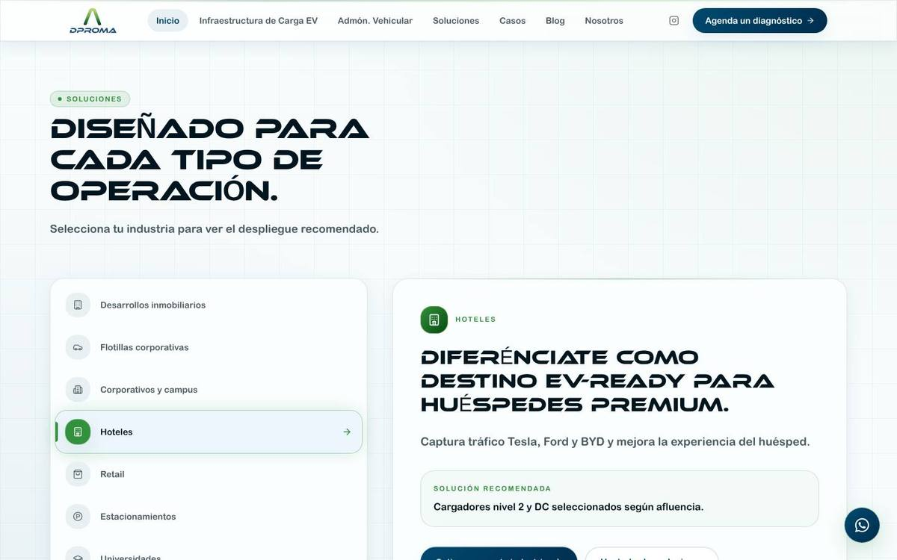
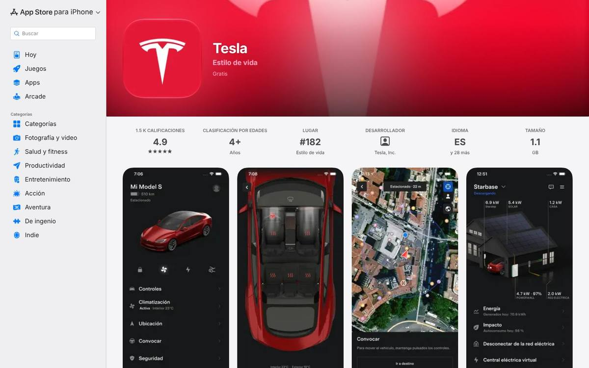
DPROMA: 2 sí · 7 parcial · 1 no.
El visitante elige su ruta (empresa, conductor, instalador) sin buscar.
«Soluciones» enruta por industria; flotillas y desarrolladores no tienen ruta propia.
Cada sector tiene su mensaje, su caso y su CTA.
Siete industrias, pero en pestañas dentro de una sola página.
Hablar con un experto, pedir cotización y escribir por WhatsApp.
Un CTA principal repetido, más WhatsApp flotante.
Estimador, configurador o mapa que entrega valor antes del contacto.
Pre-diagnóstico EV funcional.
Logos, cifras de escala, testimonios con nombre y respaldo externo.
Cifras y logos de marcas; sin clientes ni testimonios.
Contexto, solución y números de un cliente identificable.
/casos son escenarios ilustrativos.
Capturas reales de la app y botones de descarga.
Maqueta sin descarga.
Guías, FAQ, formación y soporte por audiencia.
Blog de 3 artículos y secciones de costos y requisitos.
Una cifra, un precio o un beneficio que se entiende en cinco segundos.
Tres niveles de potencia y sellos NOM-001-SEDE y CFE.
El visitante sabe el orden de magnitud antes de contactar.
Explica los factores de costo, sin rangos.
Las redes de carga son empresas privadas y no publican ingresos. Cuando el cliente aporte cifras, el orden puede cambiar.
| Empresa | Escala | Cuota de uso | Inversión | Calidad del dato |
|---|---|---|---|---|
| VEMO | ~1,950 conectores en 18 estados · ~110 mil sesiones al mes | 22 % | US$250M levantados en 2025 (Vision Ridge Partners como mayor aportante) | Cifras de la empresa |
| Tesla | Sin cifras oficiales en México | 21 % | — | Dato de terceros |
| FAZT | Meta: 1,000 puntos de carga a 2030 (alianza con Soriana) | 13 % | Factorenergia tiene el 28 % del capital | Cifras de la empresa |
| Evergo | Más de 5,000 puertos activos según la empresa; otra nota habla de más de 1,200 estaciones | — | US$200M a cinco años (otra nota: US$400M); grupo InterEnergy | Cifras contradictorias |
Fuente: Expansión, junio de 2026. Evergo no tiene porcentaje publicado; se le atribuye el mayor despliegue.
Competidores con oferta B2B para flotillas: GEVAC, Red-T y Traslandon, más gestorías locales. No hay cifras públicas ni un líder identificado.
Pendiente: confirmar con el cliente a quién ve como competidor real.
Los cuatro llegan a la misma conclusión: hay que enseñar más de lo que DPROMA ya hace.
Posicionarse como integrador y operador para empresas, no como red pública.
Unificar el proceso, mostrar producto real y dejar que el pre-diagnóstico envíe su resumen.
Sesión fotográfica, casos cortos y páginas de SEO por industria.
CTA doble, rangos orientativos y dos o tres casos reales con permiso del cliente.
Un asesor conversacional que cualifica proyectos y agenda el diagnóstico aporta valor en las cuatro lentes. «IA en todo», no.
La IA aumenta al equipo comercial; no lo reemplaza.
| Caso de uso | Negocio | UX | Marketing | Comercial | Riesgo | Cuándo |
|---|---|---|---|---|---|---|
| Asesor de pre-diagnóstico (web y WhatsApp) | Medio | Alto | Medio | Alto | Bajo | Primero |
| Agente de WhatsApp para cualificar y dar seguimiento | Medio | Medio | Medio | Alto | Medio | Segundo |
| Asesor de trámites vehiculares | Alto | Alto | Medio | Medio | Alto | Tras validar normativa |
| Agente de voz (llamadas) | Bajo | Medio | Bajo | Medio | Medio | Fase posterior |
Fase 0 · 0–4 semanas
Fase 1 · 1–3 meses
Fase 2 · 3–6 meses
Fase 3 · 6–12 meses
Primero se construyó este benchmark con SIO-DPROMA; esta versión usa el sistema de los entregables.
Tablas densas, tableros y estados de carga dentro de la herramienta. En un informe de análisis resultó pesado y escondía el mensaje.
DM Sans, cloud white, un solo acento cobalt y mucho aire. Es el sistema de esta versión: sin rojos, ámbares ni verdes, y la nota va en una rampa monocroma.
Mapa de calor con notas discretas, captura anotada y una ilustración interactiva decorativa (el terreno), que nunca debe llevar un dato.
Comprobado en esta página. axe-core no encontró violaciones WCAG 2.2 AA en claro, oscuro, 1440, 768 y 390 px, y la comprobación de paleta de la marca 2894_ pasa. Sin conexión con la librería de gráficas la tabla se abre sola; sin Hairline los terrenos se ocultan y todo el dato sigue en texto.